0%
A Synthetic Biology Solution for Environmental Monitoring
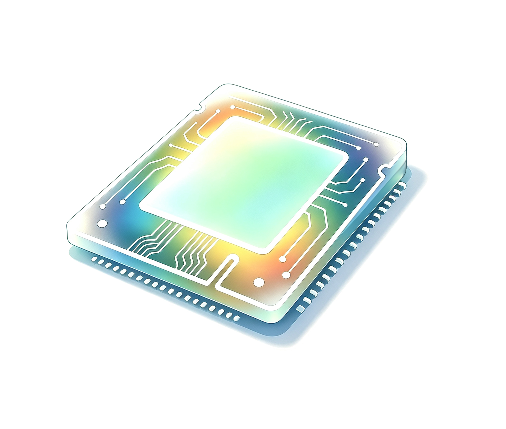
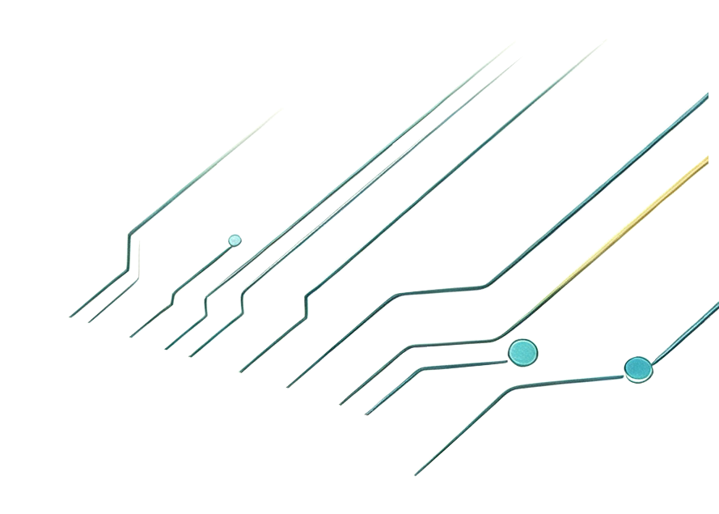
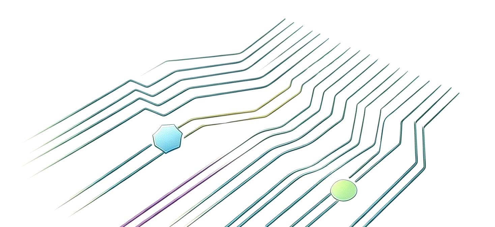
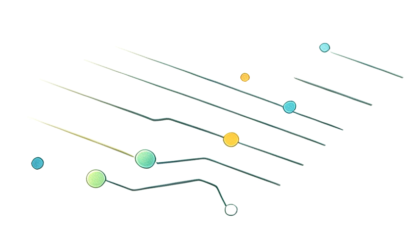
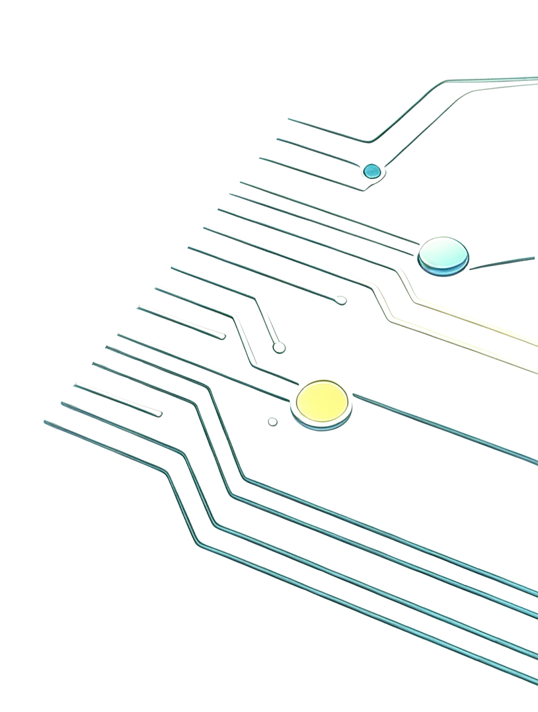
PAHs are aromatic compounds formed by two or more fused benzene rings. Featuring stable chemical properties, they can persist in the environment for a long time.
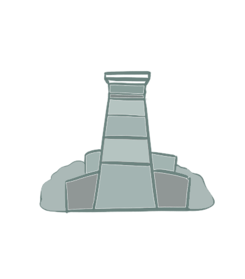
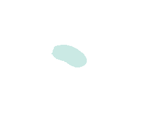
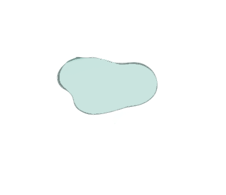
PAHs are closely linked to our daily lives. They are continuously released from vehicle exhaust, barbecue and cooking fumes, straw and coal combustion, aged road asphalt, industrial wastewater discharge and oil spills.
PAHs accumulate stepwise along the food chain. Residues in fish, shrimp and vegetables continuously enter human bodies. Although ambient concentrations rarely cause acute poisoning, long-term low-dose exposure gradually damages the respiratory system and liver and increases cancer risks. Since PAH pollution is invisible to the naked eye, people can hardly perceive local contamination levels, and such hidden environmental risks have long been overlooked.